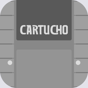

CartuchoSeus jogos ficam salvos só neste aparelho. Funciona com o controle na tela, com controle Bluetooth (PlayStation, Xbox, MFi) e com teclado.
Toque em Adicionar jogos e escolha os seus jogos no app Arquivos (pode ser .zip).
Funciona com NES, Super Nintendo, Game Boy, GBA, Nintendo 64, Nintendo DS, PlayStation, Mega Drive e outros.
Precisa de jogos? A Loja do Cartucho no Android e no PC tem jogos grátis e legais.